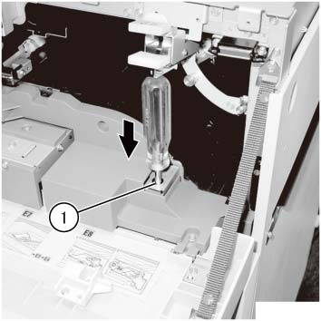
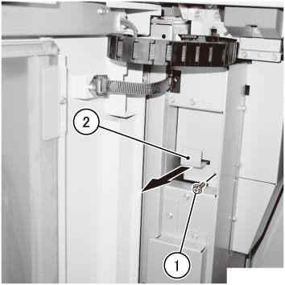

REP 39.1.1 Detaching the HCS 
参考 PL:PL 39.1
Removal

在...之后 turning 关闭/脱离 电源开关, 确认 the screen 显示 进入 关闭/脱离 和 the [电源 Saver] button 停止 blinking. 然后, 关闭 the 主 电源 开关, 确认 the [主 电源] 灯 具有 turned 关闭/脱离, 和 然后 关闭 the Breaker 和 unplug 电源插头.
和/与 电源 turned ON, 按下 纸张 removal button 在...上 HCS Panel to 打开 the 前面 门, 然后 拆卸 Dolly 和 堆叠器 纸盘.
如果 前面 门 已 unable to 打开 由于 一些 kind of 故障, 解锁 the 前面 门 manually.
关闭 the breaker 开关 的 HCS 和 unplug 电源插头 从 the 出口.
断开 HCS 通信 电缆.
打开 the 上方 盖板.
打开 the 3b 滑槽.
解锁 the HCS 前面 门. (图 1)
解锁 the 前面 门 by inserting a 5.5 mm Box Driver 进入 the hole 和 pushing it in the 方向 的 arrow.

(图 1) saw439021
打开 the 前面 门.
拆卸 HCS. (图 2)
拆卸螺钉.
拉动 对接 杠杆 in the 方向 的 arrow to 释放 对接 的 HCS.

(图 2) saw439022